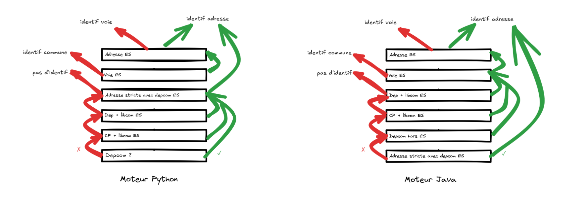

Raya Berova
6 janvier 2026
1️⃣ Contexte
2️⃣ Moteur de recherche - Théorie
3️⃣ Moteur de recherche - Pratique
Ensemble de données texte contenant des variations → Besoin de recherches textuelles rapides et efficaces
Solution : un moteur de recherche basé sur des index
ElasticSearch : logiciel pour l’indexation et la recherche de données.
Fait pour chercher des mots-clés dans des textes.
Utilisation en pratique avec Python : packages elasticsearch et elasticsearch-dsl.
Mais également utilisable avec Java.
1️⃣ Contexte
2️⃣ Moteur de recherche - Théorie
3️⃣ Moteur de recherche - Pratique
Exemple
| idVoie | nom de voie |
|---|---|
| A | du general leclerc |
| B | du general charles de gaulle |
| C | du point du jour |
| D | verdier |
| E | des cours |
Pour chaque nom de voie du référentiel, compter le nombre de mots qui sont retrouvés dans l’adresse recherchée : les matchs 🎯.
Exemple : score avec tokenizer “mot” de “45 avenue du general charles de gaulle”
| idVoie | nom de voie | score |
|---|---|---|
| A | du general leclerc | 2 |
| B | du general charles de gaulle | 5 |
| C | du point du jour | 2 |
| D | verdier | 0 |
| E | des cours | 0 |
Tokenizer = façon de découper le texte recherché et ciblé.
Pour retourner la voie la plus pertinente, on construit un score pour chaque voie : \[ score_{voie} = \sum_{\text{∀m} \in \text{M}} {nb\_occurrence}_m \]
m = mot.
M = ensemble des mots de l’adresse recherchée.
Dans une grande base de données, c’est extrêmement long.
Exemple
| idVoie | nom de voie |
|---|---|
| A | du general leclerc |
| B | du general charles de gaulle |
| C | du point du jour |
| D | verdier |
| E | des cours |
| mot | occurrences |
|---|---|
| general | {“A”: 1, “B”: 1} |
| jour | {“C”: 1} |
| du | {“A”: 1, “B”: 1, “C”: 2} |
| cours | {“E”: 1} |
| … | … |
Comptage direct ⚡ des occurrences de chaque mot de la base par idVoie.
Contourner les petites fautes d’orthographes : fuzziness.
Pour matcher 🎯 deux mots avec une fuzziness de niveau 1 = corriger l’un des mots :
Il est possible de comparer deux textes, deux n-grams ou n’importe quel autre groupe de caractères.
Prendre en compte les correspondances partielles : chaque mot est découpé en sous-chaînes de n caractères consécutifs.
Exemple de découpage en 3-grams de caractères du texte “avenue verdier” :
ave, ven, enu, nue, ver, erd, rdi, die, ier
Si un mot est inférieur à la taille n, il n’aura pas de découpage en n-grams → pas présent dans l’index inversé n-gram.
Exemple
| idVoie | nom de voie |
|---|---|
| A | du general leclerc |
| B | du general charles de gaulle |
| C | du point du jour |
| D | verdier |
| E | des cours |
| 3-gram | occurrences |
|---|---|
| gen | {“A”: 1, “B”: 1} |
| cha | {“B”: 1} |
| our | {“C”: 1, “E”: 1} |
| oin | {“C”: 1} |
| … | … |
Score pour chaque voie : \[ score_{voie} = \sum_{\text{∀ngram} \in \text{N}} {nb\_occurrence}_{ngram} \]
N = ensemble des n-grams de l’adresse recherchée.
\[ \downarrow \text{taille n-grams} \Rightarrow \text{taille index inversé} \uparrow \Rightarrow \text{temps de recherche} \uparrow \]
Le score global va donc combiner la somme des matchs 🎯 au niveau :
Il est possible de donner plus ou moins d’importance à ces différents niveaux de matchs 🎯.
Requête 🔍 pour retrouver la voie :
À chaque match 🎯, le score va ⇡ en fonction du boost 🚀 associé.
| Variable | Tokenizer | Fuzzi 1 | Boost 🚀 |
|---|---|---|---|
| Nom de voie | Mot | ✅ | 15 |
| Type de voie | Mot | ✅ | 5 |
| Nom de voie | 3 à 5-grams | ❌ | 1 |
\[ score_{voie} = \sum_{\text{∀n} \in \text{N}} \sum_{\text{∀t} \in \text{n}} boost_{n}*{nb\_occurrence}_{t} \]
N = ensemble des niveaux (niveau chaîne complète fuzzi, niveau mot fuzzi…).
n = niveau.
t = token, sous-chaîne (un mot, un 3-grams…).
Méthode de tri robuste afin de retourner le meilleur écho :
1️⃣ Contexte
2️⃣ Moteur de recherche - Théorie
3️⃣ Moteur de recherche - Pratique
Trois éléments clés d’un index Elasticsearch :
Les mappings et les settings sont définis dans des fichiers JSON.
Les settings définissent la manière dont les textes sont : nettoyés et transformés → analyzers
Dans les analyzers, il faut aussi décrire comment les textes sont : découpés en unités de recherche → tokenizers
Les mappings décrivent :
Il est possible d’appliquer plusieurs traitements à une même variable et de différencier les traitements appliqués :
Variable : nom de voie
| Traitement de la variable | Tokenizer | Données recherchées | Données indexées |
|---|---|---|---|
| Entier | non | analyze_entier_input | analyze_entier_output |
| Mot | mot | analyze_mot_input | analyze_mot_output |
| 3-gram | 3-gram | analyze_3_gram_input | analyze_3_gram_output |
👉 Pour chaque type de traitement, un index spécifique est créé.
{
"index": {
"max_ngram_diff": 3,
"routing": {
"allocation": {
"include": {
"_tier_preference": "data_content"
}
}
},
"number_of_shards": "1",
"similarity": {
"default": {
"type": "boolean"
}
},
"analysis": {
"filter": {
"remove_extra_spaces_begin_end": {
"type": "pattern_replace",
"pattern": "^\\s+|\\s+$",
"replacement": ""
},
"remove_extra_spaces": {
"type": "pattern_replace",
"pattern": "\\s+",
"replacement": " "
},
"synonyms_type_voie": {
"expand": "true",
"type": "synonym_graph",
"lenient": "true",
"synonyms": [
"abbaye,abe",
"aerodrome,aer",
"aerogare,aerg",
"aeroport,aerp",
"agglomeration,agl",
"allee,all",
"ancien chemin,anc chem",
"ancien chemin,ach",
"ancien chemin,ancien chem",
"ancien chemin,anc chemin",
"ancienne place,apl",
"ancienne place,anc pl",
"ancienne route,anc rte",
"ancienne route,anc route",
"ancienne route,ancienne rte",
"ancienne route,art",
"ancienne rue,ar",
"ancienne voie,anv",
"ancienne voie,anc voie",
"angle,angl",
"autoroute,aut",
"avenue,ave",
"avenue,av",
"balcon,bal",
"barriere,bre",
"bas chemin,bch",
"bassin,bsn",
"bastide,bstd",
"berge,ber",
"boucle,bcle",
"boulevard,bd",
"bourg,brg",
"breche,brc",
"bretelle,brtl",
"calle,call",
"calle,callada",
"camin,cami",
"campagne,cgne",
"camping,cpg",
"canal,can",
"carre,carr",
"carreau,cau",
"carrefour,car",
"carriera,cae",
"carriere,care",
"caserne,casr",
"castel,cst",
"ceinture,cein",
"centre,ctre",
"centre commercial,ccal",
"centre commercial,ccial",
"chalet,chl",
"champ,chp",
"champ,champs",
"champ,chps",
"chapelle,chap",
"charmille,chi",
"chasse,cha",
"chateau,cht",
"chaussee,chs",
"chemin,che",
"chemin,cheminement",
"chemin communal,cc",
"chemin departemental,cd",
"chemin forestier,cf",
"chemin rural,cr",
"chemin rural,c r",
"chemin vicinal,chv",
"chemin,chem",
"clos,cls",
"contour,ctr",
"corniche,cor",
"coron,coro",
"cottage,cott",
"couloir,clr",
"cours,crs",
"coursive,cive",
"croix,crx",
"darse,darce",
"darse,dars",
"degre,deg",
"descente,dsc",
"deviation,devi",
"digue,dig",
"domaine,dom",
"draille,dra",
"ecart,eca",
"ecluse,ecl",
"eglise,egl",
"embranchement,embr",
"emplacement,emp",
"enclave,env",
"enclos,enc",
"escalier,esc",
"espace,espa",
"esplanade,esp",
"etang,etng",
"faubourg,fdg",
"faubourg,fg",
"ferme,frm",
"fond,fd",
"fontaine,fon",
"foret,for",
"forum,form",
"fosse,fos",
"galerie,gal",
"grand boulevard,gbd",
"grand clos,grc",
"grand place,gde pce",
"grand place,gpl",
"grand place,grande place",
"grande allee,gde allee",
"grande allee,gra",
"grande avenue,gav",
"grande avenue,gde av",
"grande rue,grand rue",
"grande rue,gr",
"grande rue,gde rue",
"grande rue,gr rue",
"greve,grev",
"grille,gri",
"groupe,gpe",
"groupement,gpt",
"habitation,hab",
"halage,hlg",
"halle,hle",
"hameau,ham",
"haut chemin,hch",
"hauteur,htr",
"hippodrome,hip",
"hlm,habitation a loyer modere",
"hotel,hot",
"ilot,ilo",
"impasse,imp",
"jardin,jard",
"jetee,jte",
"levee,leve",
"lices,lice",
"lieu dit,lieudit",
"lieu dit,ldt",
"lieu dit,ld",
"ligne,lign",
"lotissement,lot",
"maison,mais",
"marche,mar",
"marina,mrn",
"montee,mte",
"morne,mne",
"moulin,mln",
"moulin,moul",
"musee,mus",
"nouvelle route,nte",
"palais,pal",
"parc d activites economiques,paec",
"parking,pkg",
"parvis,prv",
"passage,pas",
"passage a niveau,pn",
"passe,pass",
"passerelle,ple",
"patio,pat",
"petit chemin,pch",
"petit chemin,pt chem",
"petit sentier,pts",
"petite allee,pta",
"petite avenue,pae",
"petite impasse,pim",
"petite route,prt",
"petite rue,ptr",
"petite rue,pte rue",
"petite rue,pr",
"phare,phar",
"piste,pist",
"placa,pla",
"place,pl",
"placette,ptte",
"placis,plci",
"plage,plag",
"plaine,pln",
"plateau,plt",
"pointe,pnt",
"porche,pche",
"porte,pte",
"portique,porq",
"poste,post",
"poterne,pot",
"presqu ile,prq",
"promenade,prom",
"quai,qu",
"quartier,qua",
"quartier,qrt",
"raccourci,rac",
"raidillon,raid",
"rampe,rpe",
"rangee,rng",
"ravine,rve",
"rempart,rem",
"residence,res",
"rocade,roc",
"rond point,rpt",
"ronde,rde",
"rotonde,rtd",
"route,rte",
"route departementale,rte departementale",
"route departementale,rd",
"route nationale,rn",
"route nationale,rte nationale",
"rue,r",
"ruelle,rle",
"ruellette,rult",
"ruette,ruet",
"ruisseau,ruis",
"sentier,sente",
"sentier,sen",
"square,sq",
"stade,stde",
"station,sta",
"terrain,trn",
"terrasse,tsse",
"terre,ter",
"terre plein,tpl",
"tertre,trt",
"traboule,trab",
"traverse,tra",
"tunnel,tun",
"vallee,vallon",
"vallee,vall",
"vallee,val",
"venelle,ven",
"viaduc,viad",
"vieille route,vte",
"vieille rue,vr",
"vieux chemin,vx chemin",
"vieux chemin,vche",
"vieux chemin,vx chem",
"vieux chemin,vx che",
"villa,vla",
"village,vlg",
"village,vlge",
"village,villag",
"village,vge",
"ville,vil",
"voie,voi",
"voie communale,vc",
"voirie,voir",
"voute,vout",
"voyeul,voy",
"zone a urbaniser en priorite,zup",
"zone artisanale,zar",
"zone d activites,zone activites",
"zone d activites,parc d activites",
"zone d activites,za",
"zone d activites economiques,zae",
"zone d amenagement concerte,zac",
"zone d amenagement concerte,zone amenagement concerte",
"zone d amenagement concerte,zone damenagement concrete",
"zone d amenagement differe,zone damenagement differe",
"zone d amenagement differe,zone amenagement differe",
"zone d amenagement differe,zad",
"zone industrielle,zi"
]
},
"synonyms_type_voie_no_expand": {
"type": "synonym",
"synonyms": [
"abe => abbaye",
"aer => aerodrome",
"aerg => aerogare",
"aerp => aeroport",
"agl => agglomeration",
"all => allee",
"anc chem => ancien chemin",
"ach => ancien chemin",
"ancien chem => ancien chemin",
"anc chemin => ancien chemin",
"apl => ancienne place",
"anc pl => ancienne place",
"anc rte => ancienne route",
"anc route => ancienne route",
"ancienne rte => ancienne route",
"art => ancienne route",
"ar => ancienne rue",
"anv => ancienne voie",
"anc voie => ancienne voie",
"angl => angle",
"aut => autoroute",
"ave => avenue",
"av => avenue",
"bal => balcon",
"bre => barriere",
"bch => bas chemin",
"bsn => bassin",
"bstd => bastide",
"ber => berge",
"bcle => boucle",
"bd => boulevard",
"brg => bourg",
"brc => breche",
"brtl => bretelle",
"call => calle",
"callada => calle",
"cami => camin",
"cgne => campagne",
"cpg => camping",
"can => canal",
"carr => carre",
"cau => carreau",
"car => carrefour",
"cae => carriera",
"care => carriere",
"casr => caserne",
"cst => castel",
"cein => ceinture",
"ctre => centre",
"ccal => centre commercial",
"ccial => centre commercial",
"chl => chalet",
"chp => champ",
"champs => champ",
"chps => champ",
"chap => chapelle",
"chi => charmille",
"cha => chasse",
"cht => chateau",
"chs => chaussee",
"che => chemin",
"cheminement => chemin",
"cc => chemin communal",
"cd => chemin departemental",
"cf => chemin forestier",
"cr => chemin rural",
"c r => chemin rural",
"chv => chemin vicinal",
"chem => chemin",
"cls => clos",
"ctr => contour",
"cor => corniche",
"coro => coron",
"cott => cottage",
"clr => couloir",
"crs => cours",
"cive => coursive",
"crx => croix",
"darce => darse",
"dars => darse",
"deg => degre",
"dsc => descente",
"devi => deviation",
"dig => digue",
"dom => domaine",
"dra => draille",
"eca => ecart",
"ecl => ecluse",
"egl => eglise",
"embr => embranchement",
"emp => emplacement",
"env => enclave",
"enc => enclos",
"esc => escalier",
"espa => espace",
"esp => esplanade",
"etng => etang",
"fdg => faubourg",
"fg => faubourg",
"frm => ferme",
"fd => fond",
"fon => fontaine",
"for => foret",
"form => forum",
"fos => fosse",
"gal => galerie",
"gbd => grand boulevard",
"grc => grand clos",
"gde pce => grand place",
"gpl => grand place",
"grande place => grand place",
"gde allee => grande allee",
"gra => grande allee",
"gav => grande avenue",
"gde av => grande avenue",
"grand rue => grande rue",
"gr => grande rue",
"gde rue => grande rue",
"gr rue => grande rue",
"grev => greve",
"gri => grille",
"gpe => groupe",
"gpt => groupement",
"hab => habitation",
"hlg => halage",
"hle => halle",
"ham => hameau",
"hch => haut chemin",
"htr => hauteur",
"hip => hippodrome",
"habitation a loyer modere => hlm",
"hot => hotel",
"ilo => ilot",
"imp => impasse",
"jard => jardin",
"jte => jetee",
"leve => levee",
"lice => lices",
"lieudit => lieu dit",
"ldt => lieu dit",
"ld => lieu dit",
"lign => ligne",
"lot => lotissement",
"mais => maison",
"mar => marche",
"mrn => marina",
"mte => montee",
"mne => morne",
"mln => moulin",
"moul => moulin",
"mus => musee",
"nte => nouvelle route",
"pal => palais",
"paec => parc d activites economiques",
"pkg => parking",
"prv => parvis",
"pas => passage",
"pn => passage a niveau",
"pass => passe",
"ple => passerelle",
"pat => patio",
"pch => petit chemin",
"pt chem => petit chemin",
"pts => petit sentier",
"pta => petite allee",
"pae => petite avenue",
"pim => petite impasse",
"prt => petite route",
"ptr => petite rue",
"pte rue => petite rue",
"pr => petite rue",
"phar => phare",
"pist => piste",
"pla => placa",
"pl => place",
"ptte => placette",
"plci => placis",
"plag => plage",
"pln => plaine",
"plt => plateau",
"pnt => pointe",
"pche => porche",
"pte => porte",
"porq => portique",
"post => poste",
"pot => poterne",
"prq => presqu ile",
"prom => promenade",
"qu => quai",
"qua => quartier",
"qrt => quartier",
"rac => raccourci",
"raid => raidillon",
"rpe => rampe",
"rng => rangee",
"rve => ravine",
"rem => rempart",
"res => residence",
"roc => rocade",
"rpt => rond point",
"rde => ronde",
"rtd => rotonde",
"rte => route",
"rte departementale => route departementale",
"rd => route departementale",
"rn => route nationale",
"rte nationale => route nationale",
"r => rue",
"rle => ruelle",
"rult => ruellette",
"ruet => ruette",
"ruis => ruisseau",
"sente => sentier",
"sen => sentier",
"sq => square",
"stde => stade",
"sta => station",
"trn => terrain",
"tsse => terrasse",
"ter => terre",
"tpl => terre plein",
"trt => tertre",
"trab => traboule",
"tra => traverse",
"tun => tunnel",
"vallon => vallee",
"vall => vallee",
"val => vallee",
"ven => venelle",
"viad => viaduc",
"vte => vieille route",
"vr => vieille rue",
"vx chemin => vieux chemin",
"vche => vieux chemin",
"vx chem => vieux chemin",
"vx che => vieux chemin",
"vla => villa",
"vlg => village",
"vlge => village",
"villag => village",
"vge => village",
"vil => ville",
"voi => voie",
"vc => voie communale",
"voir => voirie",
"vout => voute",
"voy => voyeul",
"zup => zone a urbaniser en priorite",
"zar => zone artisanale",
"zone activites => zone d activites",
"parc d activites => zone d activites",
"za => zone d activites",
"zae => zone d activites economiques",
"zac => zone d amenagement concerte",
"zone amenagement concerte => zone d amenagement concerte",
"zone damenagement concrete => zone d amenagement concerte",
"zone damenagement differe => zone d amenagement differe",
"zone amenagement differe => zone d amenagement differe",
"zad => zone d amenagement differe",
"zi => zone industrielle"
],
"expand": "false"
},
"punctuation_filter": {
"pattern": "[\\p{Punct}]",
"type": "pattern_replace",
"replacement": " "
},
"synonyms_extra": {
"expand": "true",
"type": "synonym_graph",
"lenient": "true",
"synonyms": [
"saint,st",
"sainte,ste",
"saints,sts",
"saintes,stes",
"grand,gd",
"grande,gde",
"grands,gds",
"grandes,gdes",
"petits,pts",
"petites,ptes",
"general,gen",
"marechal,mal",
"lieutenant,lt",
"commandant,cdt",
"docteur,dr",
"haut,ht",
"haute,hte",
"hauts,hts",
"hautes,htes",
"president,pdt",
"sergent,sgt"
]
},
"synonyms_extra_no_expand": {
"type": "synonym",
"synonyms": [
"st => saint",
"ste => sainte",
"sts => saints",
"stes => saintes",
"gd => grand",
"gde => grande",
"gds => grands",
"gdes => grandes",
"pts => petits",
"ptes => petites",
"gen => general",
"mal => marechal",
"lt => lieutenant",
"cdt => commandant",
"dr => docteur",
"ht => haut",
"hte => haute",
"hts => hauts",
"htes => hautes",
"pdt => president",
"sgt => sergent"
],
"expand": "false"
}
},
"char_filter": {
"remove_extra_spaces_begin_end": {
"type": "pattern_replace",
"pattern": "^\\s+|\\s+$",
"replacement": ""
},
"remove_extra_spaces": {
"type": "pattern_replace",
"pattern": "\\s+",
"replacement": " "
},
"apostrophe_tiret_filter": {
"pattern": "['_]",
"type": "pattern_replace",
"replacement": " "
},
"punctuation_filter": {
"pattern": "[\\p{Punct}]",
"type": "pattern_replace",
"replacement": " "
},
"process_numero_lettre": {
"pattern": "(\\d+)([a-zA-Z]+)",
"type": "pattern_replace",
"replacement": "$1 $2"
},
"zero_devant_depcom1": {
"type": "pattern_replace",
"pattern": "^(.{1})$",
"replacement": "0000$1"
},
"zero_devant_depcom2": {
"type": "pattern_replace",
"pattern": "^(.{2})$",
"replacement": "000$1"
},
"zero_devant_depcom3": {
"type": "pattern_replace",
"pattern": "^(.{3})$",
"replacement": "00$1"
},
"zero_devant_depcom4": {
"type": "pattern_replace",
"pattern": "^(.{4})$",
"replacement": "0$1"
}
},
"normalizer": {
"zero_devant_depcom_normalizer": {
"type": "custom",
"char_filter": [
"zero_devant_depcom1",
"zero_devant_depcom2",
"zero_devant_depcom3",
"zero_devant_depcom4"
]
},
"str_normalizer": {
"type": "custom",
"filter": [
"lowercase",
"asciifolding"
],
"char_filter": [
"apostrophe_tiret_filter",
"punctuation_filter",
"process_numero_lettre",
"remove_extra_spaces_begin_end",
"remove_extra_spaces"
]
}
},
"analyzer": {
"custom_analyzer": {
"char_filter": [
"apostrophe_tiret_filter",
"process_numero_lettre"
],
"filter": [
"lowercase",
"asciifolding",
"remove_extra_spaces_begin_end",
"remove_extra_spaces"
],
"type": "custom",
"tokenizer": "standard"
},
"custom_search_analyzer": {
"char_filter": [
"apostrophe_tiret_filter",
"process_numero_lettre"
],
"filter": [
"lowercase",
"asciifolding",
"remove_extra_spaces_begin_end",
"remove_extra_spaces",
"synonyms_type_voie",
"synonyms_extra"
],
"type": "custom",
"tokenizer": "standard"
},
"ngrams_analyzer": {
"char_filter": [
"apostrophe_tiret_filter",
"process_numero_lettre"
],
"filter": [
"lowercase",
"asciifolding",
"remove_extra_spaces_begin_end",
"remove_extra_spaces"
],
"type": "custom",
"tokenizer": "ngrams"
},
"custom_search_analyzer_no_tokenize": {
"char_filter": [
"apostrophe_tiret_filter",
"process_numero_lettre"
],
"filter": [
"punctuation_filter",
"lowercase",
"asciifolding",
"remove_extra_spaces_begin_end",
"remove_extra_spaces",
"synonyms_type_voie",
"synonyms_extra"
],
"type": "custom",
"tokenizer": "keyword"
},
"custom_analyzer_no_tokenize": {
"char_filter": [
"apostrophe_tiret_filter",
"process_numero_lettre"
],
"filter": [
"punctuation_filter",
"lowercase",
"asciifolding",
"remove_extra_spaces_begin_end",
"remove_extra_spaces"
],
"type": "custom",
"tokenizer": "keyword"
}
},
"tokenizer": {
"ngrams": {
"token_chars": [
"letter",
"digit"
],
"min_gram": "3",
"type": "ngram",
"max_gram": "5"
}
}
},
"number_of_replicas": "2"
}
}
{
"properties": {
"_class": {
"type": "keyword",
"index": "false",
"doc_values": "false"
},
"codeInsee": {
"type": "keyword",
"null_value": "00000"
},
"id": {
"type": "keyword"
},
"idGaia": {
"type": "keyword"
},
"idGaiaCommune": {
"type": "keyword"
},
"idRcaVoie": {
"type": "keyword"
},
"idSource": {
"type": "keyword"
},
"idTypeVoie": {
"type": "text",
"fields": {
"keyword": {
"type": "keyword",
"normalizer": "str_normalizer"
}
},
"analyzer": "custom_analyzer",
"search_analyzer": "custom_search_analyzer"
},
"nomCommune": {
"type": "text",
"analyzer": "custom_analyzer"
},
"nomVoie": {
"type": "text",
"fields": {
"keyword": {
"type": "keyword",
"normalizer": "str_normalizer"
}
},
"analyzer": "custom_analyzer",
"search_analyzer": "custom_search_analyzer"
},
"nomVoieNorm": {
"type": "text",
"fields": {
"keyword": {
"type": "keyword",
"normalizer": "str_normalizer"
},
"ngrams": {
"type": "text",
"analyzer": "ngrams_analyzer"
},
"notokenize": {
"type": "text",
"analyzer": "custom_analyzer_no_tokenize",
"search_analyzer": "custom_search_analyzer_no_tokenize"
}
},
"analyzer": "custom_analyzer",
"search_analyzer": "custom_search_analyzer"
}
}
}
adresse = "40 CD N18"
cog = ["13032"]
body = {
"query": {
"bool": {
"filter": [
{"terms": {"codeInsee": cog}}
],
"should": [
{
"multi_match": {
"query": adresse,
"fields": ['idTypeVoie^5', 'nomVoieNorm^15'],
"type": "most_fields",
"fuzziness": 1,
"minimum_should_match": 1
}
},
{
"multi_match": {
"query": adresse,
"fields": ['nomVoieNorm.ngrams^1'],
"type": "most_fields",
"minimum_should_match": 1
}
}
],
"minimum_should_match": 1
}
},
"sort": [
{"_score": {"order": "desc"}},
{
"_script": {
"type": "number",
"script": {
"source": "int length_nomVoie = (doc.containsKey('nomVoieNorm.keyword') && doc['nomVoieNorm.keyword'].size() > 0) ? doc['nomVoieNorm.keyword'].value.length() : 0; int length_idTypeVoie = (doc.containsKey('idTypeVoie.keyword') && doc['idTypeVoie.keyword'].size() > 0) ? doc['idTypeVoie.keyword'].value.length() : 0; return length_nomVoie + length_idTypeVoie;",
"lang": "painless"
},
"order": "asc"
}
},
{
"_script": {
"type": "string",
"script": {
"source": "doc['idGaia'].value",
"lang": "painless"
},
"order": "asc"
}
}
]
}À noter : Le tri est défini dans la requête.
👉 La différence provient donc de l’écriture des requêtes :
choix des versions de variables, valeurs de boost, niveau de fuzziness, ordre des clauses, le package etc…
L’enchaînement des requêtes ES entre les deux moteurs :
